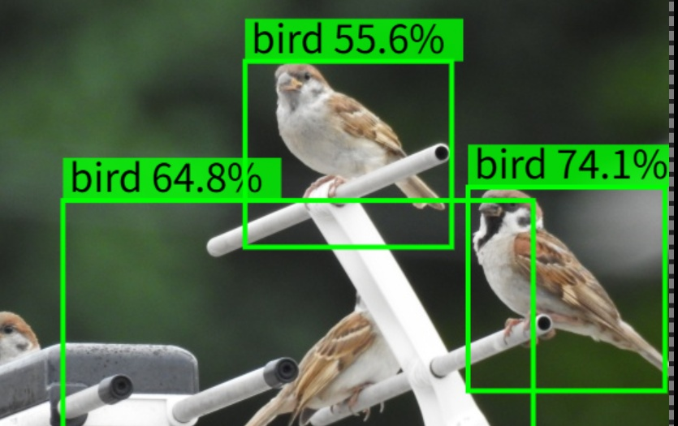
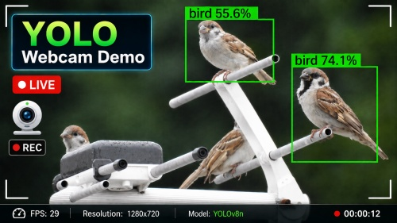

資料・記事
 3DGSの特性と、Webでの活用
3DGSの特性と、Webでの活用
 技術書典14 最後の8日間
技術書典14 最後の8日間
3Dデモ
 物流倉庫デジタルツイン Demo
倉庫内の分布を可視化し、あわよくばドローンでQR自動棚卸したいデモ。（機能追加中）
物流倉庫デジタルツイン Demo Lite
スマホ向けに倉庫・棚・商品を軽量化した、QR棚卸デモの軽量版
物流倉庫デジタルツイン Demo
倉庫内の分布を可視化し、あわよくばドローンでQR自動棚卸したいデモ。（機能追加中）
物流倉庫デジタルツイン Demo Lite
スマホ向けに倉庫・棚・商品を軽量化した、QR棚卸デモの軽量版
 名古屋LLM MeetUp 原状復帰3Dマップ
なごのCanvasで行われている勉強会の会場を、原状復帰する際に確認する3D見取り図。珍しく実用している。
名古屋LLM MeetUp 原状復帰3Dマップ
なごのCanvasで行われている勉強会の会場を、原状復帰する際に確認する3D見取り図。珍しく実用している。
 情シス向けオフィスPC管理ビューア
ソフトウェアの更新状況などを、オフィスレイアウト上で確認できたら、というデモ
情シス向けオフィスPC管理ビューア
ソフトウェアの更新状況などを、オフィスレイアウト上で確認できたら、というデモ
 Codex雑プロンプト実験 1
AIにざっくりボクセルワールドの作成を依頼。Babylon.jsでどんな実装ができるか試したデモ
Codex雑プロンプト実験 1
AIにざっくりボクセルワールドの作成を依頼。Babylon.jsでどんな実装ができるか試したデモ
 Codex雑プロンプト実験 2
自然番組風の3DシーンをAIに作らせてみた実験デモ
Codex雑プロンプト実験 2
自然番組風の3DシーンをAIに作らせてみた実験デモ
 日食のしくみ3Dビューア
太陽・地球・月の位置関係と月の影を、Web 3Dで確認するデモ
日食のしくみ3Dビューア
太陽・地球・月の位置関係と月の影を、Web 3Dで確認するデモ

画像で試すYOLO物体検出 画像ファイルを読み込み、YOLOの標準モデルで検出結果を確認するデモ
カメラで試すYOLO物体検出 Webカメラ映像を使って、YOLOの物体検出をリアルタイムに試すデモ からあげ帝国からの脱出 AI・Maker系コミュニティ「からあげ帝国」をモチーフにした、3Dモデルの横スクロールシューティングGaussian Splatting
 3DGSトリミングデモ 1
3DGSトリミングデモ 1
 3DGSトリミングデモ 2
3DGSトリミングデモ 2
 3DGS変形編集デモ
3DGS変形編集デモ
Scaniverse の3Dスキャン
 Scaniverse スキャン 2024年まで
Scaniverse スキャン 2024年まで
 Scaniverse スキャン 2025年から
Scaniverse スキャン 2025年から
各デモはブラウザから直接開けます。